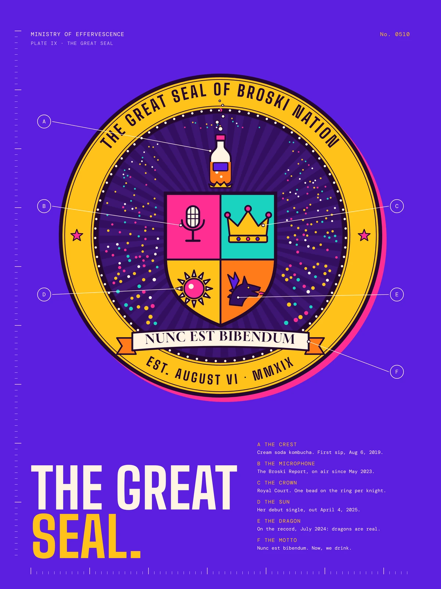
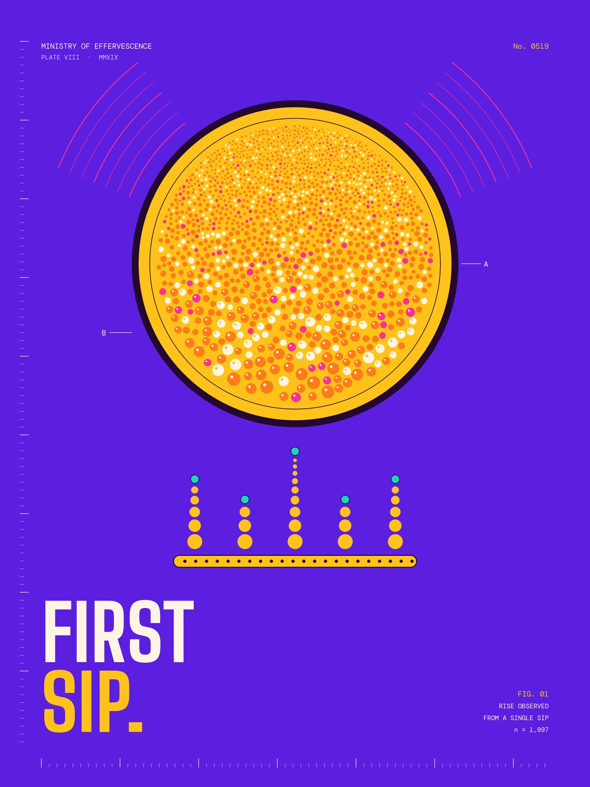

Long live theSupremeLeader.
You found the fan-run news desk of Broski Nation. We cover Brittany Broski the comedian, the podcaster, the Royal Court monarch, the singer, and the woman behind the internet's most famous sip of kombucha. Brittany has nothing to do with this site, so blame the fans for everything here.
Emergency Broadcast
On airBreaking news
Dragons are REAL
State of the Nation
We pulled these census figures from press coverage. Each one carries its date, and the Nation has grown since.
Explore the Nation
Four departments, one Supreme Leader. Pick a door.
The Broski Report
Every episode title from 2023 through late 2025, searchable, plus the running bits.
Enter ↗ The throne roomRoyal Court
All 83 guests, how a court works, and a coat of arms maker for you.
Enter ↗ The music eraMusic
The singles, the influences, and the musicians she has knighted.
Enter ↗ ClassifiedLore & Facts
33 sourced facts, the full history, and the citizenship exam.
Enter ↗Watch the Nation
Official videos from her channels. Start with the very first Royal Court, then the music.
Broski fact, freshly declassified
Harry Styles is her idol. She cried when she met him, and in February 2026 he sat at her Royal Court.
Source: Interview, Jun 2022
The Great Seal.
Every nation needs a seal, so we drew one. Each piece stands for part of her story.
First Sip.
1,584 bubbles packed into a gold seal, broadcast signals off both flanks, and a crown built from rising fizz. The plate number, the year, and the n all point somewhere specific.

Get your papers
Type your name and the Ministry will assign your post. This card is fan-made fun, not a real membership.
Citizenship Papers
- Assigned to
- Bureau of Kombucha Affairs
- Clearance
- Hozier Level
- Duty
- Listen every Tuesday. No exceptions.
Report for duty
The official channels. Go follow the real thing.